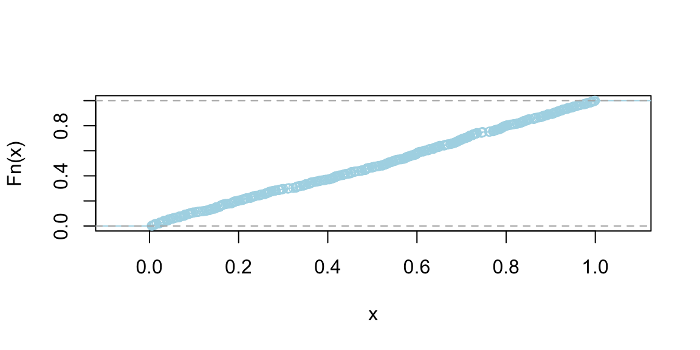
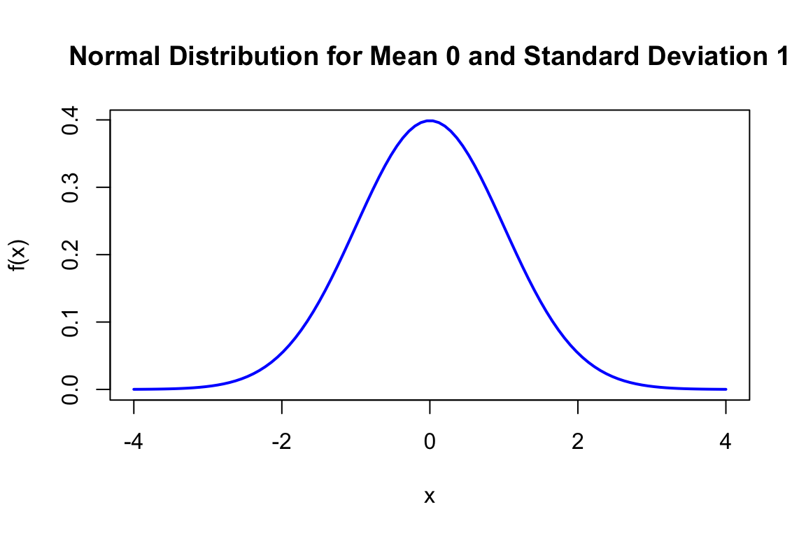

1 Probability and Uncertainty
“It is remarkable that a science which began with the consideration of games of chance should have become the most important object of human knowledge…” Pierre-Simon Laplace, 1812
Probability deals with randomness and provides a language to communicate uncertainty, which is usually associated with our lack of knowledge or information. In the classical coin toss, for instance, if we knew the exact force applied, we could predict the outcome with certainty. However, practically it is never the case and we treat coin toss outcome as random.
Assigning probabilities to events is a challenging problem. Often, the probability will be applied to analyze results of experiments (observed data). Consider the coin-tossing example. Say event \(A\) represents a Head. Then, to empirically estimate probability of event \(A\), \(P(A)\), we can repeat the tosses experiment \(N\) times and count \(n\), the number of times \(A\) occurred. The plot below shows the proportion of heads after \(N\) trials.
We can see that as \(N\) grows, the curve converges to \(0.5\). This is the law of large numbers. When \(N\) is large, \(n/N\) will be close to \(P(A)\). The probability as a limit definition is natural and was proposed by von Mises. \[ P(\text{Heads}) = \lim_{N \to \infty} \frac{n}{N}. \]
However, this definition is not operational. It requires the notion of a collective, an infinite sequence of repeatable trials with random outcomes. This is an untestable assumption and was criticized by Ville (1939). On the other hand, Kolmogorov tried to operationalize probability by proposing tests for randomness in his work on algorithmic complexity theory.
We can use a relaxed definition due to Bernoulli, and define probability as simply the ratio of the number of heads to the total number of trials in a given experiment. This definition is operational and can be used to estimate the probability of an event. This definition requires the experiment to be repeated under identical conditions. If we are to repeat this experiment under different conditions, e.g. when an unbalanced coin is used, our estimate of \(P(A)\) will change as well.
An alternative operational definition of probability was proposed by Frank Ramsey (1926) and later refined by Bruno de Finetti (1937). Rather than relying on long-run frequencies, this approach defines probability through the lens of rational betting behavior. The key insight is that your probability assignment for an event should correspond to the odds at which you would be willing to bet on that event.
de Finetti and Ramsey school of thought takes probability as subjective, namely personal to the observer. De Finetti famously concluded that “Probability does not exist.” Measuring uncertainty is personal to the observer. It’s not like mass which is a property of an object. If two different observers have differing “news” then there is an opportunity for them to bet (exchange contracts). Thus leading to an assessment of probability.
For many events most people will agree on their probabilities, for example \(P(\text{Heads}) = 0.5\). In the subjective view of probability, we can measure or elicit a personal probability as a “willingness to play”. Namely, will you be willing to bet $1 so you can get $2 if the coin lands Tail and $0 if Head occurs? The subjective view of probability also leads to subjective expected utility theory. You cannot separate the two. For more details, see Chapter 4.
This book primarily adopts the Bayesian (subjective) interpretation of probability, formalized through coherence (the Dutch book principle here, and de Finetti’s representation in Chapter 3). We still use frequentist language and long-run intuition as operational tools, but the organizing viewpoint is probabilistic modeling and belief updating.
Suppose you believe the probability of an event \(A\) is \(p\). According to Ramsey’s definition, this means you should be indifferent between paying \(p \cdot S\) dollars to receive \(S\) dollars if event \(A\) occurs (and nothing otherwise) and accepting \(p \cdot S\) dollars to pay someone \(S\) dollars if event \(A\) occurs. However, not all probability assignments lead to rational behavior. Suppose someone assigns probabilities to events in an incoherent way. In that case, a clever adversary could construct a series of bets, called a Dutch book, where the individual is guaranteed to lose money regardless of which events occur. The requirement that probabilities must be assigned in such a way that no Dutch book can be constructed against you is known as coherence. For a detailed derivation of probability rules using Dutch Book arguments, see the Appendix.
The principle of coherence for subjective probability is the fundamental rationality constraint, in finance that would be called no-arbitrage condition Bachelier (1900).
Let us consider a simple example. Suppose you assign probability \(P(A) = 0.7\) to event \(A\) occurring and probability \(P(\bar A) = 0.2\) to event \(A\) not occurring, where \(\bar A\) denotes the complement of \(A\). A Dutch book can be constructed as follows:
- Bet 1: Pay \(\$0.70\) to receive \(\$1\) if \(A\) occurs
- Bet 2: Pay \(\$0.20\) to receive \(\$1\) if \(\bar A\) occurs
Your total payment is \(\$0.90\), but you will receive exactly \(\$1\) regardless of whether \(A\) or \(\bar A\) occurs, for a guaranteed loss of \(\$0.10\). The incoherence arises because \(P(A) + P(\bar A) = 0.9 \neq 1\).
More generally, coherence implies that probabilities must satisfy the following basic properties:
- Non-negativity: For any event \(A\), we must have \(P(A) \geq 0\)
- Normalization: For the certain event \(\Omega\) (the sample space), we must have \(P(\Omega) = 1\)
- Additivity: For mutually exclusive events \(A\) and \(B\) (i.e., \(A \cap B = \emptyset\)), we must have \(P(A \cup B) = P(A) + P(B)\)
To see why non-negativity must hold, suppose \(P(A) = -0.1\) for some event \(A\). According to the betting interpretation, you would receive \(\$0.10\) and then pay \(\$1\) if \(A\) occurs. If \(A\) does not occur, you keep the \(\$0.10\) but receive nothing. However, this means you are offering to pay someone to take a bet against \(A\)—clearly irrational behavior. While standard probability theory requires non-negativity, extensions involving negative probabilities have been explored in fields like physics and quantum computing, as well as in Bayesian modeling as mixing distributions for unobserved latent variables (Polson and Sokolov 2025).
The normalization requirement \(P(\Omega) = 1\) ensures that you assign probability one to something that is certain to happen. If \(P(\Omega) < 1\), you would be willing to pay less than \(\$1\) to receive \(\$1\) with certainty, allowing an arbitrageur to make a riskless profit. Conversely, if \(P(\Omega) > 1\), you would pay more than \(\$1\) for a certain payoff of \(\$1\), guaranteeing a loss.
The additivity axiom ensures consistency across mutually exclusive events. If \(A\) and \(B\) cannot both occur, then betting on “\(A\) or \(B\)” should cost the same as placing separate bets on \(A\) and on \(B\). Violating this principle again opens the door to Dutch books.
Another axiom \(P(A) + P(\bar A) = 1\) just follows from the normalization requirement and the additivity axiom.
These are precisely the axioms proposed by Andrey Kolmogorov (1933) in his foundational work on probability theory. They provide mathematical structure to probability. Although, Kolmogorov’s axioms are agnostic to any definition of probability and are purely mathematical in nature, the fact that they can be derived from the Dutch book argument shows their applicability to rational decision-making under uncertainty. Any violation of these axioms opens you to guaranteed losses through carefully constructed bets. However, Kolmogorov’s axiomatic approach helps us to derive results in more complex settings. For examples, Kolmogorov’s framework is applicable in infinite sample spaces and continuous random variables.
The axioms provide a number of rules that probabilities must follow. There are several important corollaries that can help us assign probabilities to events. Here are some important corollaries that follow from the Kolmogorov axioms:
- Complement rule: Let “not \(A\)” denote the complement of event \(A\). \[ P(\text{not } A) = 1- P(A). \]
- Monotonicity: If \(A\subset B\), then \(P(A)\le P(B)\). In other words, the probability of a larger set is greater than or equal to the probability of a subset.
- Subadditivity: This is a generalization of the addition rule, where the equality holds when events \(A\) and \(B\) are mutually exclusive. \[ P(A \text{ or } B)\le P(A)+P(B). \]
- Inclusion–exclusion principle: This principle extends subadditivity to the case where \(A\) and \(B\) are not necessarily mutually exclusive. \[ P(A\text{ or } B)=P(A)+P(B)-P(A\text{ and }B). \]
- Conditional probability: The conditional probability of \(A\) given \(B\) is \[ P(A\mid B) = \dfrac{P(A \text{ and } B)}{P(B)}. \]
- Bayes rule simply reverses the conditioning to compute \(P(A\mid B)\) from \(P(B\mid A)\)—a disciplined probability accounting. \[ P(A\mid B) = \dfrac{P(B\mid A)P(A)}{P(B)}. \]
- Law of total probability is a direct consequence of the definition of conditional probability and the normalization axiom. It states that if \(B_1, B_2, \ldots, B_n\) are mutually exclusive and exhaustive events, then \[ P(A) = \sum_{i=1}^n P(A \text{ and } B_i) = \sum_{i=1}^n P(A \mid B_i)P(B_i). \]
All of these axioms follow simply from the principle of coherence and the avoidance of Dutch book arbitrage. This includes the Bayes rule itself (de Finetti 1937; Shimony 1955). If there is arbitrage present in the market, it should be “traded”. It often happens when subjective probabilities do not match.
Bayes rule is a fundamental rule of probability that allows us to calculate conditional probabilities. It is a direct consequence of the definition of conditional probability and the normalization axiom. This rule will become central to learning and inference in artificial intelligence.
Bayes rule simply provides a disciplined probability accounting of how probabilities get updated in light of evidence. A rational agent requires that their subjective probabilities must obey the principle of coherence. Namely in announcing the set of probabilities they cannot undergo a sure loss. Interestingly enough, this is enough to provide a similar framework to the axiomatic approach of Kolmogorov.
These corollaries and principles help in deriving further results and provide additional tools for analyzing and understanding probability and random processes based on the fundamental principles laid out by Kolmogorov. Arguably the most important rule is Bayes rule for conditional probability.
The rise of artificial intelligence has definitively established Bayesian inference as a cornerstone of modern learning algorithms. One of the key properties of probabilities is that they are updated as you learn new information. Conditional means given its personal characteristics or the personal situation. Personalization algorithms used by many online services rely on this concept. One can argue that all probabilities are conditional in some way. The process of Bayesian updating is central to how machines learn from observed data. Rational human behavior ought to adhere to Bayes rule, although there is much literature documenting the contrary.
1.1 Odds as Probabilities
Another way, sometimes more convenient, to talk about uncertainty and to express probabilities via odds, such as 9 to 2 or 3 to 1. Odds express the ratio of favorable to unfavorable outcomes (Success:Failure), while probability is the chance of an event happening out of all possibilities (Success / Total).
We assign odds “on \(A\)” (or “in favor of \(A\)”) versus odds “against \(A\)”. For example, if the probability of a Chicago Bears’ Super Bowl win is \(P(A) = 2/11\), the odds against them are \((1 - 2/11) / (2/11) = 9/2\), or “9 to 2”. This means for every 2 times they win, they lose 9 times. Conventionally, “odds on” often refers to the reverse, but to avoid ambiguity, we will speak of probability or odds against. \[ O(A) = \dfrac{P(\bar A) }{P(A)} = \dfrac{1-P(A)}{P(A)} \] Equivalently, probabilities can be determined from odds \[ P(A) = \dfrac{1}{1+O(A)} \] For example, if the odds are one \(O(A) = 1\), then for every $1 bet you will pay out $1. This event has probability \(0.5\).
If \(O(A) = 2\), then you are willing to offer \(2:1\). For a $1 bet you’ll payback $3. In terms of probability \(P(A) = 1/3\).
Odds are primarily used in betting markets. For example, let’s re-analyze the 2016 election in the US.
Example 1.1 (Odds) One of the main sources of prediction markets is bookmakers who take bets on outcomes of events (mostly sporting) at agreed upon odds. Figure 1.1 shows the odds used by several bookmakers to take bets on the winner of the US presidential election in 2016. At that time the market was predicting that Hillary Clinton would win over Donald Trump, the second favorite, with odds 7/3. The table is generated by the Oddschecker website.

Ahead of time we can assign probabilities of winning to each candidate. According to the bookmakers’ odds the candidate with highest chance to win is Hillary Clinton. The best odds on Clinton are \(1/3\); this means that you have to risk $3 to win $1 offered by Matchbook. Odds dynamically change as new information arrives. There is also competition between the Bookmakers and the Market is adapting to provide the best possible odds. Ladbrokes is the largest UK bookie and Betfair is an online exchange. A bookmaker sets their odds trying to get equal public action on both sides, otherwise they are risking to stay out of business.
Example 1.2 (Kentucky Derby) The Kentucky Derby happens once a year – first Saturday in May. In horse racing the odds are set by the betting public. The racetrack collects all the bets, takes a fee (18%), and then redistributes the pool to the winning tickets. The race is \(1 \frac{1}{4}\) miles (2 kilometers) and is the first time the three-year old horses have raced the distance.
There was a long period where favorites rarely won. Only six favorites have won in the 36 year period from 1979 to 2013. Recently favorites have won many times in a row. The market is getting better at predicting who’s going to win. Here’s the data
| Horse Name | Year | Odds |
|---|---|---|
| Spectacular Bid | 1979 | 3/5 |
| Fusaichi Pegasus | 2000 | 2.3/1 |
| Street Sense | 2007 | 9/2 |
| Big Brown | 2008 | 5/2 |
Recently, favorites have had a lot more success
| Horse Name | Year | Odds |
|---|---|---|
| California Chrome | 2014 | 5/2 |
| American Pharoah | 2015 | 2/1 |
| Nyquist | 2016 | 3.3/1 |
| Always Dreaming | 2017 | 5.2/1 |
The most famous favorite to win is Secretariat (1973) who won with odds 3/2 in a record time of 1 minute 59 and 2/5 seconds. Monarchos was the only other horse that in 2001 has broken two minutes at odds 11.5/1.
Example 1.3 (Exacta Betting and the Harville Formula) How can probability help you with betting on the race? There are many different types of bets, and probability can help you find fair odds. The Derby is a Grade 1 stakes race for three-year-old thoroughbred horses. Colts and geldings carry 126 pounds and fillies 121. The odds are set by pari-mutuel betting by the public. After all the wagers have been placed, the racetrack takes a fee (18%). After the winning horse passes the finishing line, the pool of money is redistributed to the winning tickets. Random betting therefore loses you 18%, so it’s important to learn some empirical facts to try and tilt the odds in your favor.
For example, you can place bets as follows:
- Win: “$2 win horse 1”
- Straight Exacta: “$2 exacta 1 with 2”
- Exacta Box: “$2 exacta box 1 and 2” You win with either order: 2 bets = $4.
Consider a hypothetical race where Sovereignty wins at 9/1 odds and Journalism comes second at 7/2 odds. For a $2 bet on Sovereignty to Win at 9/1, the payout would be \(2 \cdot 9 + 2 = \$20\) (the 9/1 win plus your initial $2 bet returned).
Let’s figure out the fair value for an exacta bet given that you know the win odds. This is known as the Harville formula. The exacta is probably one of the most popular bets for many horseplayers, corresponding to predicting the first two horses in the correct order.
The Harville formula provides an answer. We use the rule of conditional probability. The probability for the straight exacta of horses \(A\) beating horse \(B\) is: \[ P(A \text{ beats } B) = P(A \text{ Wins}) \cdot P(B \text{ Second} \mid A \text{ Wins}) \]
A reasonable assessment of \(P(B \text{ Second} \mid A \text{ Wins})\) can be derived as follows. Renormalizing the probabilities by removing the winner \(A\) and distributing the probability mass to the remaining horses gives: \[ P(B \text{ Second} \mid A \text{ Wins}) = \frac{P(B \text{ Wins})}{1 - P(A \text{ Wins})} \]
In total, the fair price for the exacta is: \[ P(A \text{ beats } B) = P(A \text{ Wins}) \cdot \frac{P(B \text{ Wins})}{1 - P(A \text{ Wins})} \]
Therefore, we have: \[ p_{12} = p_1 \cdot \frac{p_2}{1-p_1} \text{ where } p_1 = \frac{1}{1+O_1}, p_2 = \frac{1}{1+O_2} \]
Solving for odds, we get the Harville formula: \[ O_{12} = O_1(1 + O_2) - 1 \]
Using our example with 9/1 and 7/2 odds: \(O_{12} = 9 \cdot (1 + 3.5) - 1 = 39.5/1\).
Notice that the actual payout is determined solely by the volume of money wagered on that combination. There’s no requirement it matches our probabilistic analysis. However, the Harville formula gives us an idea of fair value. Some bettors searching for value try to find significantly undervalued exacta bets relative to the Harville formula.
There are many other factors to consider: jockey performance, bloodlines, and post positions can all matter significantly in determining the actual race outcome.
Example 1.4 (Boy-Girl Paradox) If a woman has two children and one is a girl, the chance that the other child is also female has to be \(50-50\), right? But it’s not. Let’s list the possibilities of girl-girl, girl-boy and boy-girl. So the chance that both children are girls is 33 percent. Once we are told that one child is female, this extra information constrains the odds. (Even weirder, the author demonstrates that the odds change again if we’re told that one of the girls is named Florida.) In terms of conditional probability, the four possible combinations are \[ BB \; \; BG \; \; GB \; \; GG \] Conditional on the information that one is a girl means that you know we can’t have the \(BB\) scenario. Hence we are left with three possibilities \[ BG \; \; GB \; \; GG \] In one of these is the other a girl. Hence \(1/3\).
It’s a different question if we say that the first child is a girl. Then the probability that the other is a girl is \(1/2\) as there are two possibilities \[ GB \; \; GG \] This leads to the probability of \(1/2\).
Example 1.5 (Galton Paradox) You flip three fair coins. What is the \(P(\text{all} \; \text{alike})\)?
Assuming a fair coin (i.e. \(P(H) = P(T) = 1/2\)), a formal approach might consist of computing the probability for all heads or all tails, which is
\[\begin{align*} P(HHH) &\equiv P(H \text{ and } H \text{ and } H) \\ &= P(H)\times P(H)\times P(H) \\ &= \left(\frac{1}{2}\right)^3 \end{align*}\] and, since we’re ultimately interested in the probability of either (mutually exclusive) case, \[\begin{align*} P(\text{all alike}) &= P(HHH \text{ or } TTT) \\ &= P(HHH) + P(TTT) \\ &= 2 \times \frac{1}{8} \end{align*}\]
One could arrive at the same conclusion by enumerating the entire sample space and counting the events. Now, what about a simpler argument like the following. In a run of three coin flips, two coins will always share the same result, so the probability that the “remaining/last” coin matches the other two is 1/2; thus, \[ P(\text{all alike}) = 1/2 \] There are 8 equally likely outcomes. Two are ‘all alike’ (HHH, TTT). So 2/8 = 1/4. The error in reasoning is assuming that ‘two must correspond’ fixes the first two coins, but ‘two alike’ could be coins 1&2, 2&3, or 1&3.
For a real treatment of the subject, we highly recommend reading Galton’s essay at galton.org.
Example 1.6 (Three Cards) Suppose that you have three cards: one red/red, one red/blue and one blue/blue. You randomly draw a card and place it face down on a table and then you reveal the top side. You see that it’s red. What’s the probability the other side is red? \(1/2\)? No, it’s \(2/3\)! By a similar logic there are six initial possibilities \[ B_1 B_2 \; \; B_2 B_1 \; \; B R \; \; R B \; \; R_1 R_2 \; \; R_2 R_1 \] where \(1\) and \(2\) index the sides of the same colored cards.
If we now condition on the top side being red we see that there are still three possibilities left \[ R B \; \; R_1 R_2 \; \; R_2 R_1 \] Hence the probability is \(2/3\) and not the intuitive \(1/2\).
Example 1.7 (NFL: New England Patriots Coin Toss) Let’s consider another example and calculate the probability of winning 19 coin tosses out of 25. The NFL team New England Patriots won 19 out of 25 coin tosses in the 2014-15 season. What is the probability of this happening?
Let \(X\) be a random variable equal to \(1\) if the Patriots win and \(0\) otherwise. It’s reasonable to assume \(P(X = 1) = \frac{1}{2}\). The probability of observing the sequence in which there is 1 on the first 19 positions and 0 afterwards is \((1/2)^{25}\). We can code a typical sequence as, \[ 1,1,1,\ldots,1,0,0,\ldots,0. \] There are \(177,100\) different sequences of 25 games where the Patriots win 19. There are \(25! = 1\cdot 2\cdot \ldots \cdot 25\) ways to re-arrange this sequence of zeroes and ones. Further, all zeroes and ones are interchangeable and there are \(19!\) ways to re-arrange the ones and \(6!\) ways to rearrange the sequence of zeroes. Thus, the total number of different winning sequences is
factorial(25) / (factorial(19) * factorial(25 - 19))
## 177100Each potential sequence has probability \(0.5^{25}\), thus \[ P\left(\text{Patriots win 19 out of 25 tosses}\right) = 177,100 \times 0.5^{25} = 0.005 \]
Often, it is easier to communicate uncertainties in the form of odds. In terms of betting odds of \(1:1\) gives \(P = \frac{1}{2}\), odds of \(2:1\) (I give \(2\) for each \(1\) you bet) is \(P = \frac{1}{3}\).
Remember, odds, \(O(A)\), is the ratio of the probability of happening over not happening, \[ O(A) = (1 - P(A))/P(A), \] equivalently, \[ P(A) = \frac{1}{1 + O(A)}. \]
The odds of the Patriots winning sequence are then 1 to 199
0.005 / (1 - 0.005)
## 0.005Example 1.8 (Hitting Streak) Pete Rose of the Cincinnati Reds set a National League record of hitting safely in \(44\) consecutive games. How likely is such a long sequence of safe hits to be observed? If you were a bookmaker, what odds would you offer on such an event? This means that he safely reached first base after hitting the ball into fair territory, without the benefit of an error or a fielder’s choice at least once in every one of those 44 games. Here are a couple of facts we know about him:
- Rose was a \(300\) hitter, he hits safely 3 times out of 10 attempts
- Each at bat is assumed to be independent, i.e., the current at bat doesn’t affect the outcome of the next.
Assuming he comes to bat \(4\) times each game, what probability might reasonably be associated with that hitting streak? First we define notation. We use \(A_i\) to denote an event of hitting safely at game \(i\), then \[ \begin{aligned} & P( \mathrm{Rose \; Hits \; Safely \; in \;44 \; consecutive \; games} ) = \\ & P ( A_1 \; \text{and} \; A_2 \ldots \text{and} \; A_{44} ) = P ( A_1 ) P ( A_2 ) \ldots P ( A_{44} ) \end{aligned} \] We now need to find \(P(A_i)\)s where \(P(A_i) = 1 - P(\text{not} \; A_i)\) \[\begin{align*} P ( A_1 ) & = 1 - P ( \mathrm{ not} \; A_1 ) \\ & = 1 - P ( \mathrm{ Rose \; makes \; 4 \; outs } ) \\ & = 1 - ( 0.7)^4 = 0.76 \end{align*}\] For the winning streak, then we have \((0.76)^{44} = 0.0000057\), a very low probability. In terms of odds, there are three basic inferences
- This means that the odds for a particular player as good as Pete Rose starting a hitting streak today are 175,470 to 1.
- This doesn’t mean that the run of \(44\) won’t be beaten by some player at some time: the Law of Very Large Numbers
- Joe DiMaggio’s record is 56. He is a 325 hitter, thus we have \((0.792)^{56} = 2.13 \times 10^{-6}\) or 455,962 to 1. It’s going to be hard to beat.
The independence assumption underlying this calculation does not account for the popular belief in the “hot hand”—the idea that a player who has been successful recently is more likely to succeed again.
Example 1.9 (Derek Jeter) Sample averages can have paradoxical behavior. This is related to the field of causation and the property of confounding. Let’s compare Derek Jeter and David Justice batting averages. In both 1995 and 1996, Justice had a higher batting average than Jeter did. However, when you combine the two seasons, Jeter shows a higher batting average than Justice! This is just a property of averages and finer subset selection can change your average effects.
| 1995 | 1996 | Combined | ||||
|---|---|---|---|---|---|---|
| Derek Jeter | 12/48 | 0.250 | 183/582 | 0.314 | 195/630 | 0.310 |
| David Justice | 104/411 | 0.253 | 45/140 | 0.321 | 149/551 | 0.270 |
This situation is known as confounding. It occurs when two separate and different populations are aggregated to give misleading conclusions. The example shows that if \(A,B,C\) are events it is possible to have the three inequalities \[\begin{align*} &P( A \mid B \text{ and } C ) > P( A \mid B \text{ and } \bar C )\\ &P( A \mid \bar B \text{ and } C ) > P( A \mid \bar B \text{ and } \bar C )\\ &P( A \mid C ) < P( A \mid \bar C ) \end{align*}\] The three inequalities can’t hold simultaneously when \(P(B\mid C) = P(B\mid \bar C)\).
Example 1.10 (Birthday Problem) The birthday problem (Diaconis and and Mosteller 1989) is a classic problem in probability theory that explores the counterintuitive likelihood of shared birthdays within a group. Surprisingly, in a room of 23 people, the probability of shared birthdays is 50%. With 70 people, the probability is 99.9%.
In general, given \(N\) items (people) randomly distributed into \(c\) categories (birthdays), where the number of items is small compared to the number of categories \(N \ll c\), the probability of no match is given by \[ P(\text{no match}) \approx \exp\left(-N^2/2c\right). \] Given \(A_i\) is the event that person \(i\) has a matching birthday with someone, we have \[ P(\text{no match}) = \prod_{i=1}^{N-1}(1-P(A_i)) = \exp\left(\sum_{i=1}^{N-1}\log (1-P(A_i))\right). \] Here \(P(A_i) =\dfrac{i}{c}\) Then use the approximation \(\log(1-x) \approx -x\) for small \(x\) to get \(P(\text{no match})\). \[ \sum_{i=1}^{N-1}\log (1-P(A_i)) \approx -\sum_{i=1}^{N-1}\dfrac{i}{c} = -\dfrac{N(N-1)}{2c}. \]
The probability of at least two people sharing a birthday is then the complement of the probability above: \[ P(\text{At least one shared birthday}) = 1 - P(\text{no match}). \] Solving for \(P(\text{match})=1/2\), leads to a square root law \(N=1.2\sqrt{c}\), if \(c=365\) then \(N=23\), and if \(c=121\) (near birthday match), then \(N=13\).
The unintuitive nature of this result is a consequence of the fact that there are many potential pairs of people in the group, and the probability of at least one pair sharing a birthday increases quickly as more people are added. The birthday problem is often used to illustrate concepts in probability, combinatorics, and statistical reasoning. It’s a great example of how our intuitions about probabilities can be quite different from the actual mathematical probabilities.
1.2 Random Variables: Quantifying Uncertainty
A random variable is a function that maps the outcomes of a random experiment (events) to real numbers. It essentially assigns a numerical value to each outcome in the sample space of a random experiment. In other words, a random variable provides a bridge between the abstract concept of events in a sample space and the concrete calculations involving numerical values and probabilities. Similar to assigning probabilities to events, we can assign respective probabilities to random variables.
For example, consider a random experiment of rolling a die. Here, an event could be “the outcome is an even number”, and the random variable could be the actual number that shows up on the die. The probability of the event “the outcome is an even number” is 0.5, and the probability distribution of the random variable is a list of all numbers from 1 to 6 each with a probability of 1/6.
While events and random variables are distinct concepts, they are closely related through the framework of probability theory, with random variables serving as a key tool for calculating and working with probabilities of events.
Random variables are quantities that we are not certain about. A random variable that can take a finite or a countable number of values is called a discrete random variable (number of rainy days next week). Otherwise, it will be a continuous random variable (amount of rain tomorrow).
Discrete random variables are often constructed by assigning specific values to events such as \(\{X=x\}\) which corresponds to the outcomes where \(X\) equals a specific number \(x\). For example
- Will a user click-through on a Google ad? (0 or 1)
- Who will win the next presidential election? (Republican=1, Democrat=2, Independent=3)
To fix notation, we will use \(P(X=x)\) to denote the probability that random variable \(X\) is equal to \(x\). A map from all possible values \(x\) of a discrete random variable \(X\) to probabilities is called a probability mass function \(p(x)\). We will interchangeably use \(P(X=x)\) and \(p(x)\). An important property of the probability mass function is that (normalization Kolmogorov axiom) \[ \sum_{x\in S} p(x) = 1. \] Here \(S\) denotes the set of all possible values of random variable \(X\).
Clearly, all probabilities have to be greater than or equal to zero, so that \(p(x)\ge 0\).
Often, we are interested in \[ F(x) = P(X\le x) = \sum_{y\le x} p(y), \] this is the cumulative distribution function (CDF).
The CDF is a monotonically increasing function (never decreases as \(x\) increases). In other words, if \(a \leq b\), then \(F_X(a) \leq F_X(b)\). The value of the CDF always lies between 0 and 1, inclusive.
Example 1.11 (Discrete CDF) Suppose \(X\) is a discrete random variable that represents the outcome of rolling a six-sided die. The probability mass function (PMF) of \(X\) is:
\[ P(X = x) = \frac{1}{6} \] for \(x = 1, 2, 3, 4, 5, 6\)
The CDF of \(X\), \(F(x)\), is calculated as follows:
- For \(x < 1\), \(F(x) = 0\) (since it’s impossible to roll less than 1).
- For \(1 \leq x < 2\), \(F(x) = \frac{1}{6}\) (the probability of rolling a 1).
- For \(2 \leq x < 3\), \(F(x) = \frac{1}{6} + \frac{1}{6} = \frac{2}{6}\) (the probability of rolling a 1 or 2).
- This pattern continues, adding \(\frac{1}{6}\) for each integer interval up to 6.
- For \(x \geq 6\), \(F(x) = 1\) (since it’s certain to roll a number 6 or less).
Graphically, the CDF of a discrete random variable is a step function that increases at the value of each possible outcome. It’s flat between these outcomes because a discrete random variable can only take specific, distinct values.
plot(ecdf(1:6), main = "")
Continuous Random Variables
If we want to build a probabilistic model of a stock price or return, we need to use a continuous random variable that can take an interval of values. Instead of a frequency function we will use a density function, \(p(x)\) to describe a continuous variable. Unlike the discrete case, \(p(x)\) is not the probability that the random variable takes value \(x\). Rather, we need to talk about the value being inside an interval. For example, the probability of \(X\) with density \(p(x)\) being inside any interval \([a,b]\), with \(a<b\) is given by \[ P(a < X < b) = \int_{a}^{b}p(x)dx. \] The total probability is one as \(\int_{-\infty}^\infty p(x) dx=1\). The simplest continuous random variable is the uniform. A uniform distribution describes a variable which takes on any value as likely as any other. For example, if you are asked about what would be the temperature in Chicago on July 4 of next year, you might say anywhere between 20 and 30 C. The density function of the corresponding uniform distribution is then \[ p(x) = \begin{cases} 1/10, ~~~20 \le x \le 30\\0, ~~~\mbox{otherwise}\end{cases} \]
Under this model, the probability of temperature being between 25 and 27 degrees is \[ P(25 \le x \le 27) = \int_{25}^{27} p(x)dx = (27-25)/10 = 0.2 \]
The Cumulative Distribution Function for a continuous random variable, it is defined similarly to discrete RV CDF as \[ F(x) = P(X \leq x) = \int_{-\infty}^x p(t)dt \] It is a non-decreasing function and takes values in [0,1].
Example 1.12 (Continuous CDF for Uniform Distribution) \[ p(x) = \begin{cases} 1 & \text{if } 0 \leq x \leq 1 \\ 0 & \text{otherwise} \end{cases} \]
The CDF, \(F(x)\), is obtained by integrating the PDF:
- For \(x < 0\), \(F(x) = 0\).
- For \(0 \leq x \leq 1\), \(F(x) = \int_0^x 1 \, dt = x\).
- For \(x > 1\), \(F(x) = 1\).
So, the CDF of this uniform distribution is a linear function that increases from 0 to 1 as \(x\) goes from 0 to 1.
Graphically, the CDF of a continuous random variable is a smooth curve. It starts at 0, increases as \(x\) increases, and eventually reaches 1. The exact shape of the curve depends on the distribution of the variable, but the smooth, non-decreasing nature is a common feature. Figure below shows the CDF of a uniform and normal random variable, respectively.
plot(ecdf(runif(500)), main = "", col = "lightblue", pch = 21, bg = "grey")
plot(ecdf(rnorm(500)), main = "", col = "lightblue", pch = 21, bg = "grey")

The Inverse CDF Method
The inverse distribution method uses samples of uniform random variables to generate draws from random variables with a continuous distribution function, \(F\). Since \(F\left( x\right)\) is uniformly distributed on \(\left[ 0,1\right]\), draw a uniform random variable and invert the CDF to get a draw from \(F\). Thus, to sample from \(F\), \[\begin{align*} & \text{Step 1}\text{: Draw }U\sim U\left[ 0,1\right] \ \\ & \text{Step 2}\text{: }\text{Set }X=F^{-1}\left( U\right) , \end{align*}\] where \(F^{-1}\left( U\right) =\inf\left\{ x:F\left( x\right) =U\right\}\).
This inversion method provides i.i.d. draws from \(F\) provided that \(F^{-1}\left( U\right)\) can be exactly calculated. For example, the CDF of an exponential random variable with parameter \(\mu\) is \(F\left( x\right) =1-\exp\left( -\mu x\right)\), which can easily be inverted. When \(F^{-1}\) cannot be analytically calculated, approximate inversions can be used. For example, suppose that the density is a known analytical function. Then, \(F\left( x\right)\) can be computed to an arbitrary degree of accuracy on a grid and inversions can be approximately calculated, generating an approximate draw from \(F\). With all approximations, there is a natural trade-off between computational speed and accuracy. One example where efficient approximations are possible are inversions involving normal distributions, which is useful for generating truncated normal random variables. Outside of these limited cases, the inverse transform method does not provide a computationally attractive approach for drawing random variables from a given distribution function. In particular, it does not work well in multiple dimensions.
Functional Transformations
The second main method uses functional transformations to express the distribution of a random variable that is a known function of another random variable. Suppose that \(X\sim F\), admitting a density \(f\), and that \(y=h\left( x\right)\) is an increasing continuous function. Thus, we can define \(x=h^{-1}\left( y\right)\) as the inverse of the function \(h\). The distribution of \(y\) is given by \[ F_Y\left(y\right) =P\left( Y\leq y\right) =\int_{-\infty}^{h^{-1}\left( y\right) }f\left( x\right) dx=F_X\left( X\leq h^{-1}\left(y\right) \right). \] Differentiating with respect to \(y\) gives the density via Leibnitz’s rule: \[ f_{Y}\left( y\right) =f\left( h^{-1}\left( y\right) \right) \left\vert\frac{d}{dy}\left( h^{-1}\left( y\right) \right) \right\vert, \] where we make explicit that the density is over the random variable \(Y\). This result is used widely. For example, if \(X\sim\mathcal{N}\left( 0,1\right)\), then \(Y=\mu+\sigma X\). Since \(x=h^{-1}\left( y\right) =\frac{y-\mu}{\sigma}\), the distribution function is \(F\left( \frac{x-\mu}{\sigma}\right)\) and density \[ f_{Y}\left( y\right) =\frac{1}{\sqrt{2\pi}\sigma}\exp\left( -\frac{1}{2}\left( \frac{y-\mu}{\sigma}\right) ^{2}\right). \] Transformations are widely used to simulate both univariate and multivariate random variables. As examples, if \(Y\sim\mathcal{X}^{2}\left( \nu\right)\) and \(\nu\) is an integer, then \(Y=\sum_{i=1}^{\nu}X_{i}^{2}\) where each \(X_{i}\) is independent standard normal. Exponential random variables can be used to simulate \(\mathcal{X}^{2}\), Gamma, Beta, and Poisson random variables. The famous Box-Muller algorithm simulates normals from uniform and exponential random variables. In the multivariate setting, Wishart (and inverse Wishart) random variables can be simulated via sums of squared vectors of standard normal random variables.
1.3 Expectation and Variance (Reward and Risk)
An expected value of a random variable, denoted by \(\E{X}\) is a weighted average. Each possible value of a random variable is weighted by its probability. For example, Google Maps uses expected value when calculating travel times. We might compute two different routes by their expected travel time. Typically, a forecast or expected value is all that is required — these expected values can be updated in real time as we travel. Say I am interested in travel time from Washington National airport to Fairfax in Virginia. The histogram below shows the travel times observed for a work day evening and were obtained from Uber.
Example 1.13 (Uber) Let’s look at the histogram of travel times from Fairfax, VA to Washington, DC

From this dataset, we can empirically estimate the probabilities of observing different values of travel times
| Travel Time | Probability |
|---|---|
| 18 | 0.05 |
| 22 | 0.77 |
| 28 | 0.18 |
There is a small chance (5%) I can get to Washington, DC in 18 minutes, which probably happens on a holiday and a non-trivial chance (18%) to travel for 28 minutes, possibly due to a sports game or bad weather. Most of the time (77%) our travel time is 22 minutes. However, when Uber shows you the travel time, it uses the expected value as a forecast rather than the full distribution. Specifically, you will be given an expected travel time of 23 minutes.
0.05 * 18 + 0.77 * 22 + 0.18 * 28
## 23It is a simple summary that takes into account travel accidents and other events that can affect travel time as best as it can.
The expected value \(\E{X}\) of discrete random variable \(X\) which takes possible values \(\{x_1,\ldots x_n\}\) is calculated using
\[ \E{X} =\sum_{i=1}^{n}x_i P(X = x_i) \]
For example, in a binary scenario, if \(X\in \{0,1\}\) and \(P(X=1)=p\), then \(\E{X} = 0\times(1-p)+1\times p = p\). The expected value of a Bernoulli random variable is simply the probability of success. In many binary scenarios, a probabilistic forecast is sufficient.
If \(X\) is continuous with probability distribution \(p(x)\), then we have to calculate the expectation as an integral \[ \E{X} = \int xp(x)d x \text{ and } \int p(x)dx = 1. \]
Standard Deviation and Covariance
Variance measures the spread of a random variable around its expected value \(\mu = \E{X}\). For a discrete random variable \(X\) with possible values \(\{x_1,\ldots x_N\}\), we have \[ \Var{X} = \E{(X-\mu)^2} = \sum_{i=1}^N (x_i-\mu)^2 P(X=x_i). \] In the continuous case, we have \[ \Var{X} = \int_{-\infty}^\infty (x-\mu) ^2 p(x)dx,\text{ where } \mu = \mathbb{E}(X)=\int_{-\infty}^{\infty}p_X(x)dx. \]
The standard deviation is more convenient and is the square root of variance \(\sd{X} = \sqrt{\Var{X}}\). Standard deviation has the desirable property that it is measured in the same units as the random variable \(X\) itself and is a more useful measure.
Suppose that we have two random variables \(X\) and \(Y\). We need to measure whether they move together or in opposite directions. The covariance is defined by \[ \Cov{X,Y} = \E{\left[ (X- \E{X})(Y- \E{Y})\right]}. \]
When \(X\) and \(Y\) are discrete and we are given the joint probability distribution, we need to calculate \[ \Cov{X,Y} = \sum_{x,y} ( x - \E{X} )(y - \E{Y})p(x,y). \] Covariance is measured in units of \(X\times\)units of \(Y\). This can be inconvenient and makes it hard to compare covariances of different pairs of variables. A more convenient metric is the correlation, which is defined by \[ \Cor{X,Y}= \frac{ \Cov{X,Y} }{ \sd{X} \sd{Y} }. \] Correlation, \(\Cor{X,Y}\), is unitless and takes values between -1 and 1.
In the case of joint continuous distribution it is convenient to use the covariance matrix \(\Sigma\) which is defined as \[ \Sigma = \begin{bmatrix} \Var{X} & \Cov{X,Y} \\ \Cov{X,Y} & \Var{Y} \end{bmatrix}. \] If \(X\) and \(Y\) are independent, then \(\Cov{X,Y} = 0\) and \(\Sigma\) is diagonal. The correlation matrix is defined as \[ \rho = \begin{bmatrix} 1 & \Cor{X,Y} \\ \Cor{X,Y} & 1 \end{bmatrix}. \] If \(X\) and \(Y\) have an exact linear relationship, then \(\Cor{X,Y} = 1\) and \(\Cov{X,Y}\) is the product of standard deviations. In matrix notation, the relation between the covariance matrix and correlation matrix is given by \[ \rho = \mathrm{diag}\left(\Sigma\right)^{-1/2} \Sigma\mathrm{diag}\left(\Sigma\right)^{-1/2}, \] where \(\Sigma\) is a diagonal matrix with standard deviations on the diagonal.
Portfolios: linear combinations
Calculating means and standard deviations of combinations of random variables is a central tool in probability. It is known as the portfolio problem. Let \(P\) be your portfolio, which comprises a mix of two assets \(X\) and \(Y\), typically stocks and bonds, \[ P = aX + bY, \] where \(a\) and \(b\) are the portfolio weights, typically \(a+b=1\), as we are allocating our total capital. Imagine that you have placed \(a\) dollars on the random outcome \(X\), and \(b\) dollars on \(Y\). The portfolio \(P\) measures your total weighted outcome.
Key portfolio rules: The expected value and variance follow the relations \[\begin{align*} \E{aX + bY} = & a\E{X}+b\E{Y}\\ \Var{ aX + bY } = & a^2 \Var{X} + b^2 \Var{Y} + 2 ab \Cov{X,Y }, \end{align*}\] with covariance defined by \[ \Cov{X,Y} = \E{ ( X- \E{X} )(Y- \E{Y})}. \] Expectation and variance help us to understand the long-run behavior. When we make long-term decisions, we need to use the expectations to avoid biases.
The covariance is related to the correlation by \(\Cov{X,Y} = \text{Corr}(X, Y) \cdot \sqrt{\text{Var}(X) \cdot \text{Var}(Y)}\).
Example 1.14 (Tortoise and Hare) Tortoise and Hare are selling cars. Say \(X\) is the number of cars sold and probability distributions, means and variances are given by the following table
| \(X\) | Mean | Variance | sd | ||||
|---|---|---|---|---|---|---|---|
| 0 | 1 | 2 | 3 | \(\E{X}\) | \(\Var{X}\) | \(\sqrt{\Var{X}}\) | |
| Tortoise | 0 | 0.5 | 0.5 | 0 | 1.5 | 0.25 | 0.5 |
| Hare | 0.5 | 0 | 0 | 0.5 | 1.5 | 2.25 | 1.5 |
Let’s calculate Tortoise’s expectations and variances \[\begin{align*} \E{T} & = (1/2) (1) + (1/2)(2) = 1.5 \\ \Var{T} & = \E{T^2} - \E{T}^2 \\ & = (1/2)(1)^2 + (1/2)(2)^2 - (1.5)^2 = 0.25 \end{align*}\]
Now the Hare’s \[\begin{align*} \E{H} & = (1/2)(0) + (1/2)(3) = 1.5 \\ \Var{H} & = (1/2)(0)^2 + (1/2)(3)^2- (1.5)^2 = 2.25 \end{align*}\]
What do these tell us about the long run behavior?
Tortoise and Hare have the same expected number of cars sold.
Tortoise is more predictable than Hare. He has a smaller variance.
The standard deviations \(\sqrt{\Var{X}}\) are \(0.5\) and \(1.5\), respectively. Given two equal means, you always want to pick the lower variance. If we are to invest in one of those, we prefer Tortoise.
What about a portfolio of Tortoise and Hare? Suppose I want to evenly split my investment between Tortoise and Hare. What is the expected number of cars sold and the variance of the number of cars sold? \[ \E{\frac{1}{2}T + \frac{1}{2}H} = \frac{1}{2} \E{T} + \frac{1}{2} \E{H} = 1.5 \] For variance, we need to know \(\Cov{T,H}\). Let’s take \(\Cov{T,H} = -1\) and see what happens. \[ \begin{aligned} \Var{\frac{1}{2}T + \frac{1}{2}H} &= \frac{1}{4} \Var{T} + \frac{1}{4} \Var{H} + \frac{1}{2} \Cov{T,H} \\ &= 0.0625 + 0.5625 -0.5 = 0.125 \end{aligned} \]
Notice that the portfolio variance (0.125) is lower than both individual variances (0.25 and 2.25). This demonstrates the power of diversification - by combining investments with negative covariance, we can reduce overall risk while maintaining the same expected return. The negative covariance indicates that when Tortoise performs well, Hare tends to perform poorly, and vice versa, creating a natural hedge.
This example illustrates a fundamental principle in finance and decision theory: diversification can reduce risk without sacrificing expected returns when assets are not perfectly positively correlated. The key insight is that variance depends not only on individual asset volatilities but also on their covariances, making portfolio construction a crucial consideration in risk management.
1.4 Limiting Behavior of Averages
The Tortoise and Hare example illustrates how expectations and variances behave for a single period or a fixed portfolio. However, in many real-world applications—from insurance to machine learning—we are interested in what happens when we repeat an experiment many times. Does the average outcome settle down to a predictable value?
When we observe a stochastic process repeatedly, we naturally ask: what happens to averages as we collect more data? This question lies at the heart of statistical inference and forms the theoretical foundation for learning from experience. The answer is provided by the law of large numbers, one of the most fundamental results in probability theory.
The Weak Law of Large Numbers
The weak law of large numbers, in its simplest form, states that sample averages converge in probability to the expected value. We assume that observation \(x_1, x_2, \ldots, x_n\) are draws (realizations) of independent identically distributed (i.i.d.) random variables \(X_1, X_2, \ldots, X_n\) with finite mean \(\mu = \E{X_i}\). Then the sample average \(\bar{X}_n = \frac{1}{n}\sum_{i=1}^n x_i\) satisfies: \[ \lim_{n \to \infty} P\left(\left|\bar{X}_n - \mu\right| > \epsilon\right) = 0, \] for any \(\epsilon > 0\). This form of convergence, known as convergence in probability, means that for large enough \(n\), the probability that the sample average deviates from the true mean by more than any fixed amount becomes arbitrarily small.
The proof of this result, when the variance \(\sigma^2 = \Var{X_i}\) exists and is finite, follows elegantly from Chebyshev’s inequality. Since \(\E{\bar{X}_n} = \mu\) and \(\Var{\bar{X}_n} = \sigma^2/n\), we have:
\[ P\left(\left|\bar{X}_n - \mu\right| > \epsilon\right) \leq \frac{\Var{\bar{X}_n}}{\epsilon^2} = \frac{\sigma^2}{n\epsilon^2} \to 0 \]
as \(n \to \infty\). This simple argument reveals why averages become more reliable as sample sizes grow: the variance of the sample mean shrinks at rate \(1/n\).
This \(1/n\) scaling reappears throughout the book, from confidence intervals and A/B testing (Chapter 5) to the role of sample size in estimation risk and generalization.
Kolmogorov’s Strong Law of Large Numbers
While the weak law establishes convergence in probability, a stronger form of convergence is possible. The strong law of large numbers states that sample averages converge almost surely (with probability one) to the expected value. This is a fundamentally stronger statement: it means that for almost every realization of the sequence, the sample average actually approaches the true mean, not merely that the probability of large deviations vanishes.
Andrey Kolmogorov formalized this result in his groundbreaking 1933 monograph Foundations of the Theory of Probability (Kolmogoroff 1933), establishing the conditions under which strong convergence holds. His result revolutionized probability theory by providing a rigorous measure-theoretic foundation for probabilistic reasoning.
Kolmogorov’s Strong Law states that if \(X_1, X_2, \ldots\) are independent random variables (not necessarily identically distributed) with \(\E{|X_i|} < \infty\), then:
\[ \bar{X}_n = \frac{1}{n}\sum_{i=1}^n X_i \to \mu \quad \text{almost surely} \]
where \(\mu = \lim_{n \to \infty} \frac{1}{n}\sum_{i=1}^n \E{X_i}\), provided this limit exists. For i.i.d. random variables with finite mean \(\E{X_i} = \mu\), this simplifies to \(\bar{X}_n \to \mu\) almost surely.
The distinction between convergence in probability and almost sure convergence is subtle but crucial. Convergence in probability allows for infinitely many large deviations, as long as they become increasingly rare. Almost sure convergence is stronger: it requires that eventually, after some finite (but random) time, all deviations remain small forever.
Formally, almost sure convergence means:
\[ P\left(\lim_{n \to \infty} \bar{X}_n = \mu\right) = 1 \]
This is equivalent to saying that the set of sequences for which the limit fails to equal \(\mu\) has probability zero. For practical purposes, this means we can be confident that the specific sequence we observe will exhibit convergence—not merely that convergence is likely.
The independence assumption is central to Kolmogorov’s results, but it can be relaxed in various ways for different applications. For stochastic processes with dependent observations, the key question becomes: how much dependence can we tolerate while still obtaining convergence of averages?
For stationary processes—where the joint distribution of \((X_t, X_{t+1}, \ldots, X_{t+k})\) does not depend on \(t\)—a law of large numbers holds under considerably weaker conditions than independence. If the process is ergodic (roughly, if it eventually “forgets” its initial conditions), then time averages converge to ensemble averages:
\[ \frac{1}{n}\sum_{i=1}^n X_i \to \mu \quad \text{almost surely} \]
This ergodic theorem extends Kolmogorov’s law of large numbers to dependent sequences and has profound implications for statistical inference from time series data. It justifies the common practice of estimating population means from a single long realization of a stochastic process.
The law of large numbers is not merely a theoretical curiosity—it forms the bedrock of statistical practice. Every time we estimate a population mean from a sample, test a hypothesis, or train a machine learning model, we implicitly rely on the law of large numbers. The confidence we place in larger samples, the use of cross-validation to assess model performance, and the convergence of stochastic gradient descent in deep learning all trace back to this fundamental result.
In the context of stochastic processes, the law of large numbers justifies estimating process parameters from a single long trajectory. When modeling financial returns, climate data, or network traffic, we typically observe one realization over time rather than multiple independent realizations. The ergodic theorem ensures that time averages from this single path converge to the true population moments, enabling inference from the data we actually have.
The Kolmogorov’s formalization is the culmination of several decades of work on the foundations of probability theory. The weak law of large numbers was first proved by Jakob Bernoulli in 1713 for the special case of binomial random variables—an achievement that took him over twenty years. The result was later generalized by Poisson (1837) and Chebyshev (1867) to broader classes of random variables.
The strong law required deeper mathematical machinery. Émile Borel proved a version for Bernoulli trials in 1909, but the general result awaited the development of measure-theoretic probability. Francesco Cantelli made progress in the 1910s, but it was Kolmogorov who provided the definitive treatment in 1933, unifying diverse results under a single rigorous framework.
Kolmogorov’s work transformed probability theory from a collection of special cases and heuristics into a branch of mathematics with the same rigor as analysis or algebra. His measure-theoretic foundations enabled precise statements about almost sure convergence, clarified the distinction between different modes of convergence, and opened the door to modern probability theory and stochastic processes.
The law of large numbers has profound implications for Bayesian inference and computational statistics. For applications to posterior consistency, Monte Carlo simulation, and Markov chain Monte Carlo (MCMC) methods, see Section 3.11 in Chapter 3.
1.5 Binomial, Poisson, and Normal Distributions
We now examine three fundamental probability distributions that appear throughout statistics and machine learning.
Bernoulli Distribution
The formal model of a coin toss was described by Bernoulli. He modeled the notion of probability for a coin toss, now known as the Bernoulli distribution, where \(X \in \{0,1\}\) and \(P(X=1)=p, P(X=0) = 1-p\). Laplace gave us the principle of insufficient reason: where you would list out the possibilities and then place equal probability on each of the outcomes. Essentially the discrete uniform distribution on the set of possible outcomes.
A Bernoulli trial relates to an experiment with the following conditions
- The result of each trial is either a success or failure.
- The probability \(p\) of a success is the same for all trials.
- The trials are assumed to be independent.
The Bernoulli random variable can take on one of two possible outcomes, typically labeled as “success” and “failure.” It is named after the Swiss mathematician Jacob Bernoulli, who introduced it in the 18th century. The distribution is often denoted by \(\text{Bernoulli}(p)\), where \(p\) is the probability of success.
The probability mass function (PMF) of a Bernoulli distribution is defined as follows: \[ P(X = x) = \begin{cases} p & \text{if } x = 1 \\ 1 - p & \text{if } x = 0 \end{cases} \] The expected value (mean) of a Bernoulli distributed random variable \(X\) is given by: \[\E{X} = p \] Simply speaking, if you are to toss a coin many times, you expect \(p\) heads.
The variance of \(X\) is given by: \[ \Var{X} = p(1-p) \]
Example 1.15 (Coin Toss) The quintessential random variable is an outcome of a coin toss. The set of all possible outcomes, known as the sample space, is \(S = \{H,T\}\), and \(P(X = H) = P(X = T) = 1/2\). On the other hand, a single outcome can be an element of many different events. For example, there are four possible outcomes of two coin tosses, HH, TT, HT, TH, which are equally likely with probabilities 1/4. The probability mass function over the number of heads \(X\) out of two coin tosses is
| \(x\) | 0 | 1 | 2 |
|---|---|---|---|
| \(p(x)\) | 1/4 | 1/2 | 1/4 |
Given the probability mass function we can, for example, calculate the probability of at least one head as \(P(X \geq 1) = P(X =1) + P(X =2) = p(1)+p(2) = 3/4\).
The Bernoulli distribution serves as the foundation for more complex distributions, such as the binomial distribution (which models the number of successes in a fixed number of independent Bernoulli trials) and the geometric distribution (which models the number of trials needed to achieve the first success). A Binomial distribution arises from a sequence of Bernoulli trials, and assigns probability to \(X\), which is the number of successes. Its probability distribution is calculated via: \[ P(X=x) = {n \choose x} p^x(1-p)^{n-x}. \] Here \({n \choose x}\) is the combinatorial function, \[ {n \choose x} = \frac{n!}{x!(n-x)!}, \] Here the combinatorial function \({n \choose x}\) counts the number of ways of getting \(x\) successes in \(n\) trials and \(n!=n(n-1)(n-2)\ldots 2 \cdot 1\) counts the number of permutations of \(n\) observations without replacement.
Plot below shows the probability mass function of a Binomial distribution with \(n = 20\) and \(p = 0.3\).
barplot(dbinom(0:20, size = 20, prob = 0.3),
names.arg = 0:20, col = "lightblue",
xlab = "Number of Heads", ylab = "Probability"
)The table below shows the expected value and variance of a Binomial random variable. Those quantities can be calculated by plugging in the possible outcomes and corresponding probabilities into the definitions of expected value and variance.
| Binomial Distribution | Parameters |
|---|---|
| Expected value | \(\mu = \E{X} = n p\) |
| Variance | \(\sigma^2 = \Var{X} = n p ( 1 - p )\) |
For large sample sizes \(n\), this distribution is approximately normal with mean \(np\) and variance of \(np(1-p)\).
Let \(X\) be the number of heads in three flips. Each possible outcome (“realization”) of \(X\) is an event. Now consider the event of getting only two heads \[ \{ X= 2\} = \{ HHT, HTH, THH \} , \] The probability distribution of \(X\) is Binomial with parameters \(n = 3, p= 1/2\), where \(n\) denotes the sample size (a.k.a. number of trials) and \(p\) is the probability of heads; we have a fair coin. The notation is \(X \sim \mathrm{Bin} \left ( n = 3 , p = \frac{1}{2} \right )\) where the sign \(\sim\) is read as distributed as.
| Result | \(X\) | \(P(X=x)\) |
|---|---|---|
| HHH | 3 | \(p^3\) |
| HHT | 2 | \(p^2 ( 1- p)\) |
| HTH | 2 | \(p^2 ( 1 - p)\) |
| THH | 2 | \((1-p)p^2\) |
| HTT | 1 | \(p( 1-p)^2\) |
| THT | 1 | \(p ( 1-p)^2\) |
| TTH | 1 | \((1-p)^2 p\) |
| TTT | 0 | \((1-p)^3\) |
Poisson Distribution
The Poisson distribution is a discrete probability distribution that expresses the probability of a given number of events occurring in a fixed interval of time or space if these events occur with a known constant mean rate and independently of the time since the last event. You can think of Poisson distribution as a limiting case of the Binomial distribution when the number of trials \(n\) is large and the probability of success \(p\) is small, such that \(np = \lambda\) remains constant. Think of a soccer game where the goal is the “successful” event of interest. The soccer team does not have a predefined number of attempts to score a goal. Rather they continiously try to score a goal until they do. The number of goals scored in a game is the number of events occurring in a fixed interval of time. The mean number of goals scored in a game is the mean rate of events occurring in a fixed interval of time.
There are many examples of Poisson distributed random variables. For example, the number of phone calls received by a call center per hour, the number of emails received per day, the number of customers arriving at a store per hour, the number of defects in a manufactured product, the number of accidents on a highway per month.
A random variable \(X\) follows a Poisson distribution with parameter \(\lambda > 0\) if its probability mass function is given by: \[ P(X = k) = \frac{\lambda^k e^{-\lambda}}{k!} \] for \(k = 0, 1, 2, 3, \ldots\), where \(\lambda\) is both the mean and variance of the distribution.
Plot below shows the probability mass function of a Poisson distribution with \(\lambda = 1, 5, 10\).

We write \(X \sim \text{Poisson}(\lambda)\) to denote that \(X\) follows a Poisson distribution with parameter \(\lambda\).
| Poisson Distribution | Parameters |
|---|---|
| Expected value | \(\mu = \E{X} = \lambda\) |
| Variance | \(\sigma^2 = \Var{X} = \lambda\) |
Example 1.16 (Customer Arrivals) Suppose customers arrive at a coffee shop at an average rate of 3 customers per hour. What is the probability that exactly 5 customers will arrive in the next hour?
Using the Poisson distribution with \(\lambda = 3\): \[ P(X = 5) = \frac{3^5 e^{-3}}{5!} = \frac{243 \times e^{-3}}{120} \approx 0.101 \]
So there is approximately a 10.1% chance that exactly 5 customers will arrive in the next hour.
The Poisson distribution can be derived as a limiting case of the binomial distribution when \(n\) is large and \(p\) is small, such that \(np = \lambda\) remains constant. This connection makes the Poisson distribution particularly useful for modeling rare events in large populations.
Normal Distribution
The Normal distribution is a continuous probability distribution that is widely used in statistics and probability theory. It is also known as the Gaussian distribution or the bell curve. The Normal distribution is characterized by its symmetric bell-shaped curve and is defined by two parameters: the mean (\(\mu\)) and the variance (\(\sigma^2\)).
The probability density function (PDF) of the Normal distribution is given by: \[ f(x) = \frac{1}{\sigma \sqrt{2\pi}} e^{-\frac{(x-\mu)^2}{2\sigma^2}} \] for \(-\infty < x < \infty\), where \(\mu\) is the mean and \(\sigma\) is the standard deviation.
The Normal distribution is often used to model real-world phenomena such as measurement errors, heights, weights, and scores on standardized tests. It is also used in hypothesis testing and confidence interval construction.
Example 1.17 (Heights of Adults) The heights of adult males in a certain population are normally distributed with a mean of 70 inches and a standard deviation of 3 inches.
- What is the probability that a randomly selected male is between 67 and 73 inches tall?
Using the Normal distribution with \(\mu = 70\) and \(\sigma = 3\):

The bell curve in Figure 1.2 shows the probability density function of a random variable \(X \sim N(70,3^2)\) that follows a Normal distribution with mean 70 and standard deviation 3. As we can see, the Normal distribution is symmetric around the mean, and the mean, median, and mode are all equal. The probability of a randomly selected male being between 67 and 73 inches tall is the area under the curve between 67 and 73 inches and is approximately 0.6827.
Now let’s calculate this probability using R:
prob_between <- pnorm(73, mean = 70, sd = 3) - pnorm(67, mean = 70, sd = 3)
cat("P(67 < X < 73) =", round(prob_between, 4), "\n")
## P(67 < X < 73) = 0.68The calculation shows that \(P(67 < X < 73) = P(X \leq 73) - P(X \leq 67) \approx 0.6827\).
This result makes sense because 67 and 73 inches are exactly one standard deviation below and above the mean (70 \(\pm\) 3), respectively. According to the empirical rule (68-95-99.7 rule), approximately 68% of values in a normal distribution fall within one standard deviation of the mean.
So approximately 68.27% of adult males are between 67 and 73 inches tall.
- What height corresponds to the 95th percentile?
We need to find \(x\) such that \(P(X \leq x) = 0.95\). From standard normal tables, \(\Phi^{-1}(0.95) \approx 1.645\).
x <- qnorm(0.95, mean = 70, sd = 3)
cat("Height corresponding to the 95th percentile:", round(x, 2), "inches\n")
## Height corresponding to the 95th percentile: 75 inchesTherefore: \(x = \mu + \sigma \cdot 1.645 = 70 + 3 \cdot 1.645 = 74.935\) inches.
1.6 Conditional, Marginal and Joint Distributions
Suppose that we have two random variables \(X\) and \(Y\), which can be related to each other. Knowing \(X\) would change your belief about \(Y\). For example, as a first pass, psychologists who study the phenomenon of happiness can be interested in understanding its relation to income level. Now we need a single probability mass function (a.k.a. probabilistic model) that describes all possible values of those two variables. Joint distributions do exactly that.
Formally, the joint distribution of two variables \(X\) and \(Y\) is a function given by \[ P(x,y) = P(X=x,Y=y). \] This maps all combinations of possible values of these two variables to a probability on the interval [0,1].
The conditional probability is a measure of the probability of a random variable \(X\), given that the value of another random variable was observed \(Y = y\). \[ P(x\mid y) = P(X = x \mid Y = y). \]
The marginal probability of a subset of a collection of random variables is the probability distribution of the variables contained in the subset without reference to the values of the other variables. Say we have two random variables \(X\) and \(Y\), the marginal probability \(P(X)\) is the probability distribution of \(X\) when the values of \(Y\) are not taken into consideration. This can be calculated by summing the joint probability distribution over all values of \(Y\). The converse is also true: the marginal distribution can be obtained for \(Y\) by summing over the separate values of \(X\).
Marginal probability is different from conditional probability. Marginal probability is the probability of a single event occurring, independent of other events. A conditional probability, on the other hand, is the probability that an event occurs given that another specific event has already occurred.
Example 1.18 (Salary-Happiness) Let’s look at an example. Suppose that to model the relationship between two quantities, salary \(Y\) and happiness \(X\). After running a survey, we summarize our results using the joint distribution, that is described by the following “happiness index” table as a function of salary.
| X = 0 (low) | X = 1 (medium) | X = 2 (high) | |
|---|---|---|---|
| Y = low (0) | 0.03 | 0.13 | 0.14 |
| Y = medium (1) | 0.12 | 0.11 | 0.01 |
| Y = high (2) | 0.07 | 0.01 | 0.09 |
| Y = very high (3) | 0.02 | 0.13 | 0.14 |
Each cell of the table is the joint probability, e.g. 14% of people have very high income level and are very happy. Those joint probabilities are calculated by simple counting and calculating the proportions.
Now, if we want to answer the question what is the percent of high earners in the population. For that we need to calculate what is called a marginal probability \(P(y = 2)\). We can calculate the proportion of high earners \(P(y = 2)\) by summing up the entries in the third row of the table, which is 0.17 in our case.
0.07 + 0.01 + 0.09
## 0.17Formally marginal probability over \(y\) is calculated by summing the joint probability over the other variable, \(x\), \[ p(y) = \sum_{x \in S}p(x,y) \] Where \(S\) is the set of all possible values of the random variable \(X\).
Another question of interest is whether happiness depends on income level. To answer those types of questions, we need to introduce an important concept, which is the conditional probability of \(X\) given that the value of variable \(Y\) is known. This is denoted by \(P(X=x\mid Y=y)\) or simply \(p(x\mid y)\), where \(\mid\) reads as “given” or “conditional upon”.
The conditional probability \(p(x\mid y)\) also has interpretation as updating your probability over \(X\) after you have learned the new information about \(Y\). In this sense, probability is also the language of how you change opinions in light of new evidence. The proportion of happy people among high earners is given by the conditional probability \(P(X=2\mid Y=2)\) and can be calculated by dividing the proportion of those who are high earners and highly happy by the proportion of high earners \[ P(X=2\mid Y=2) = \dfrac{P(X=2,Y=2)}{P(Y=2)} = \dfrac{0.09}{0.17} = 0.5294118. \]
Now, if we compare it with the proportion of highly happy people \(P(X = 2) = 0.38\), we see that on average you are more likely to be happy given your income is high.
1.7 Independence
Historically, the concept of independence in experiments and random variables has been a defining mathematical characteristic that has uniquely shaped the theory of probability. This concept has been instrumental in distinguishing the theory of probability from other mathematical theories.
Using the notion of conditional probability, we can define independence of two variables. Two random variables \(X\) and \(Y\) are said to be independent if \[ P(Y = y \mid X = x) = P(Y = y), \] for all possible \(x\) and \(y\) values. That is, learning information \(X=x\) doesn’t affect our probabilistic assessment of \(Y\) for any value \(y\). In the case of independence, \(p(x \mid y) = p(x)\) and \(p(y \mid x) = p(y)\).
Conditional probabilities are counter-intuitive. For example, one of the most important properties is typically \(p( x \mid y ) \neq p( y\mid x )\). Confusing these two—specifically equating \(P(A|B)\) with \(P(B|A)\)—is a common error known as the Prosecutor’s Fallacy.
We just derived an important relation that allows us to calculate conditional probability \(p(x \mid y)\) when we know joint probability \(p(x,y)\) and marginal probability \(p(y)\). The total probability or evidence can be calculated as usual, via \(p(y) = \sum_{x}p(x,y)\).
We will see that independence will lead to a different conclusion than the Bayes conditional probability decomposition: specifically, independence yields \(p( x,y ) = p(x) p(y)\) whereas Bayes implies \(p(x ,y) = p(x)p(y \mid x)\).
1.8 Further Notes: Dutch Book Arguments
If probabilities are degrees of belief and subjective, where do they come from and what rules must they satisfy? These questions were answered to varying degrees by Ramsey, de Finetti, and Savage. Ramsey and de Finetti, working independently and at roughly the same time, developed the first primitive theories of subjective probability and expected utility, and Savage placed the theories on a more rigorous footing, combining the insights of Ramsey with the expected utility theory of von Neumann and Morgenstern.
The starting point for Ramsey’s and de Finetti’s theories is the measurement of one’s subjective probabilities using betting odds, which have been used for centuries to gauge the uncertainty over an event. As noted by de Finetti, “It is a question of simply making mathematically precise the trivial and obvious idea that the degree of probability attributed by an individual to a given event is revealed by the conditions under which he would be disposed to bet on that event” (p. 101). Notice the difference between the frequentist and Bayesian approach. Instead of defining the probabilities via an infinite repeated experiment, the Bayesian approach elicits probabilities from an individual’s observed behavior.
Formally, for any event \(A\), the identity \[ P(A) =\frac{1}{1+\text{odds}(A)}\text{ or }\text{odds}(A)=\frac{1-P(A)}{P(A)}, \] where \(\bar A\) is the complement of \(A\), links odds and probabilities. Throughout, we use \(P\) as a generic term to denote probabilities, when there is no specific reference to an underlying distribution or density. If a horse in a race has odds of 2, commonly expressed as 2:1 (read two to one), then the probability the horse wins is \(1/3\). The basic idea of using betting odds to elicit probabilities is simple and intuitive: ask an individual to place odds over various mutually exclusive events, and use these odds to calculate the probabilities. Odds are fair if lower odds would induce a person to take the bet and higher odds would induce the person to take the other side of the bet.
In constructing a collection of betting odds over various events, de Finetti and Ramsey argued that not all odds are rational (i.e., consistent or coherent). For example, the sum of the probability of each horse winning a race cannot be greater than one. If a person has inconsistent beliefs, then he “could have a book made against him by a cunning bettor and would then stand to lose in any event” (Ramsey (1931), p. 22). This situation is called a Dutch book arbitrage, and a rational theory of probability should rule out such inconsistencies. By avoiding Dutch books, Ramsey and de Finetti showed that the degrees of beliefs elicited from coherent odds satisfy the standard axioms of probability theory, such as the restriction that probabilities are between zero and one, finite additivity, and the laws of conditional probability. The converse also holds: probabilities satisfying the standard axioms generate odds excluding Dutch-book arbitrages. Absence of arbitrage is natural in finance and economics and is a primary assumption for many foundational results in asset pricing. In fact, the derivations given below have a similar flavor to those used to prove the existence of a state price density assuming discrete states.
Dutch-book arguments are simple to explain. To start, they require an individual to post odds over events. A bettor or bookie can then post stakes or make bets at those odds with a given payoff, \(S\). The choice of the stakes is up to the bettor. A Dutch book occurs when a cunning bettor makes money for sure by placing carefully chosen stakes at the given odds. Alternatively, one can view the odds as prices of lottery tickets that pay off $1 when the event occurs, and the stakes as the number of tickets bought. Thus, probabilities are essentially lottery ticket prices. In fact, de Finetti used the notation ‘Pr’ to refer to both prices and probabilities.
To derive the rules, consider the first axiom of probability: for any event \(A\), \(0\leq P(A) \leq 1\). Suppose that the odds imply probabilities \(P(A)\) for \(A\) occurring and \(P(\bar A)\) for other outcomes, with associated payoffs of \(S_{A}\) and \(S_{\bar A}\). Then, having bet \(S_{A}\) and \(S_{\bar A}\), the gains if \(A\) or \(\bar A\) occur, \(G_{A}\) and \(G_{\bar A}\), respectively, are \[\begin{align*} G(A) & =S_{A}-P(A) S_{A}-P(\bar A) S_{\bar A}\\ G(\bar A) & =S_{\bar A}-P(A) S_{A}-P(\bar A) S_{\bar A}. \end{align*}\] To see this, note that the bettor receives \(S_{A}\) and pays \(P(A) S_{A}\) for a bet on event \(A\). The bookie can always choose to place a zero stake on \(\bar A\) occurring, which implies that \(G(A) =S_{A}-P(A) S_{A}\) and \(G\left(\bar A\right) =-P(A) S_{A}\). Coherence or the absence of arbitrage implies that you cannot gain or lose in both states, thus \(G(A) G(\bar A) \leq 0\). Substituting, \(\left( 1-P(A) \right) P(A) \geq0\) or \(0\leq P(A) \leq 1\), which is the first axiom of probability. The second axiom, that the set of all possible outcomes has probability \(1\), is similarly straightforward to show.
The third axiom is that probabilities add, that is, for two disjoint events \(A_{1}\) and \(A_{2}\), \(P(A) =P\left( A_{1} \text{ or } A_{2}\right) =P\left( A_{1}\right) +P\left( A_{2}\right)\). Assuming stakes sizes of \(S_{A}\), \(S_{A_{1}},\) and \(S_{A_{2}}\) (and zero stakes on their complements) there are three possible outcomes. If neither \(A_{1}\) nor \(A_{2}\) occur, the gain is \[ G(\bar A) =-P(A) S_{A} -P\left( A_{1}\right) S_{A_{1}}-P\left( A_{2}\right) S_{A_{2}}. \]
If \(A_{1}\) occurs, \(A\) also occurs, and the gain is \[ G\left( A_{1}\right) =\left( 1-P(A) \right) S_{A}+\left( 1-P\left( A_{1}\right) \right) S_{A_{1}}-P\left( A_{2}\right) S_{A_{2}}, \] and finally if \(A_{2}\) occurs, \(A\) also occurs, and \[ G\left( A_{2}\right) =\left( 1-P(A) \right) S_{A}-P\left( A_{1}\right) S_{A_{1}}+\left( 1-P\left( A_{2}\right) \right) S_{A_{2}}. \] Arranging these into a matrix equation, \(G=PS\): \[ \left( \begin{array} [c]{c}% G(\bar A) \\ G\left( A_{1}\right) \\ G\left( A_{2}\right) \end{array} \right) =\left( \begin{array} [c]{ccc}% -P(A) & -P\left( A_{1}\right) & -P\left( A_{2}\right) \\ 1-P(A) & 1-P\left( A_{1}\right) & -P\left( A_{2}\right) \\ 1-P(A) & -P\left( A_{1}\right) & 1-P\left( A_{2}\right) \end{array} \right) \left( \begin{array} [c]{c}% S_{A}\\ S_{A_{1}}\\ S_{A_{2}}% \end{array} \right). \]
The absence of a Dutch book arbitrage implies that there is no set of stakes, \(S_{A}\), \(S_{A_{1}}\), and \(S_{A_{2}}\), such that the winnings in all three events are positive. If the matrix \(P\) is invertible, it is possible to find stakes with positive gains. To rule this out, the determinant of \(P\) must be zero, which implies that \(0=-P(A) +P\left(A_{1}\right) +P\left( A_{2}\right)\), or \(P\left(A\right) =P\left( A_{1}\right) +P\left( A_{2}\right)\).
The fourth axiom is conditional probability. Consider an event \(B\), with \(P\left( B\right) >0\), an event \(A\) that occurs conditional on \(B\), and the event that both \(A\) and \(B\) occur. The probabilities or prices of these bets are \(P\left( B\right)\), \(P\left( A \mid B\right)\), and \(P\left( A \text{ and } B\right)\). Consider bets with stakes \(S_{B}\), \(S_{A \mid B}\) and \(S_{A \text{ and } B}\), with the understanding that if \(B\) does not occur, the conditional bet on \(A\) is canceled. The payoffs to the events that \(B\) does not occur, \(B\) occurs but not \(A\), and \(A\) and \(B\) occur, are \[ \left( \begin{array} [c]{c}% G\left( \bar B\right) \\ G\left( \bar A \text{ and } B\right) \\ G\left( A \text{ and } B\right) \end{array} \right) =\left( \begin{array} [c]{ccc}% -P\left( B\right) & -P\left( A \text{ and } B\right) & 0\\ 1-P\left( B\right) & -P\left( A \text{ and } B\right) & -P\left( A \mid B\right) \\ 1-P\left( B\right) & 1-P\left( A \text{ and } B\right) & 1-P\left( A \mid B\right) \end{array} \right) \left( \begin{array} [c]{c}% S_{B}\\ S_{A \text{ and } B}\\ S_{A \mid B}% \end{array} \right). \] Similar arguments imply the determinant must be zero, which implies that \[ P\left( A \mid B\right) =\frac{P\left( A \text{ and } B\right) }{P\left( B\right) }, \] which is the law of conditional probability, given \(P(B)>0\), of course, otherwise the conditional probability is not defined, and the \(P\) matrix has determinant 0.